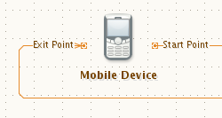

NetBeans Graph Library 1.0 - Features

Visualize a Graph Model
The graph model is defined by following rules:
- A node could have a set of ports.
- A port has a single node assigned.
- A link could have a source and a target port assigned.
Drag&Drop Style of Work
Most of the actions are possible to invoke using left mouse button: selection (single and rectangular), moving objects, creating links, relinking.
Shift key modifier is used for invert selection. Ctrl key is used to entering Alternate mode.
Visual Feedback
- Objects selection.
- Objects highlighting - allows second type of visual feedback e.g. highlighing all links that are attached to selected nodes.
- Mouse over effect on all active objects.
Looks and Feels
API allows to plug in L&F of all objects. Each object could have different L&F.
Extensible
The library defines interfaces that could implemented by 3rd-party and plugged in the library. Following interfaces are in the API:
- Document Model - holds document data.
- Node Model - holds node data.
- Link Model - holds link data.
- Port Model - holds port data.
- Document Renderer - defines look of a background.
- Node Renderer - defines look of a node.
- Link Renderer - defines look of a link.
- Port Renderer - defines look of a port.
- Nodes Layouter - resolves nodes positions and support of animated node positioning.
- View Controller - defines user behaviour e.g. left-clicking on a node means that the particular node should be selected by model
- Model Event Handler - receives events from the library and view controller and makes changes in the model which are propagated back to the graph library and visualized e.g. an event that a new link should be created.
Multi View
Two possible multi-views:
- View Cloning - two JComponents which are showing exactly the same content including looks and feels.
- Views of Model - two JComponents which are showning the same model but could use different looks and feels.
Multi Layers
Rendering of objects is done in layers. Each object could be rendered in more than one layer e.g. a link should be renderer below nodes but when the link is selected it should be renderer over nodes, ...
Undo-Redo
Allows undo/redo actions on a view e.g. node position changes.
Zoom in/out
A view allows to zoom in and out using a zoom factor property.
In-place Editing
A renderer could specify in-place editor e.g. when you double-click on a text, an in-place editor is shown in the scene and allows you to edit it.
Snap-to-grid
A node is snapped to a grid when it moves.
Alternative Node
Special (second) editing mode dedicated for modifing link (using their control points) and ports locations. By default editing mode is invoked by pressing Ctrl key.
Orthogonal Link Router
A link router which creates orthogonal path that keep away from other objects on the scene.
Breadth-first Nodes Layouter
A nodes layouter which layouts nodes using breadth-first algorithm.